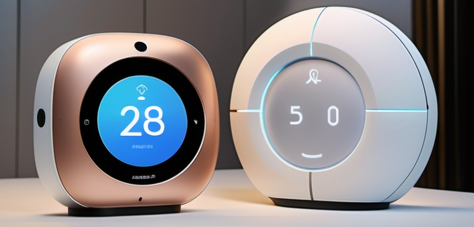

Metode SCAMPER adalah teknik kreatif yang digunakan untuk mengembangkan ide-ide baru dan inovatif dengan cara memodifikasi atau meningkatkan produk yang sudah ada. SCAMPER merupakan akronim dari tujuh strategi : Substitute, Combine, Adapt, Modify, Put to another use, Eliminate, dan Reverse. Dengan menggunakan metode ini, kita dapat mengeksplorasi berbagai kemungkinan untuk menciptakan produk yang lebih baik dan lebih relevan di era teknologi saat ini.
SmartHome Assistant adalah perangkat pintar yang mengintegrasikan berbagai fungsi untuk mengelola dan mengontrol berbagai aspek rumah, seperti pencahayaan, keamanan, suhu, dan perangkat hiburan. Dikenal dengan kemampuan untuk belajar dan beradaptasi dengan kebiasaan pengguna, SmartHome Assistant menawarkan fitur seperti pengendalian suara, akses jarak jauh melalui aplikasi, dan interoperabilitas dengan perangkat pintar lainnya. Manfaatnya mencakup kenyamanan, efisiensi energi, dan peningkatan keamanan rumah, membuat hidup sehari-hari lebih mudah dan aman.
Dalam tahap ini, kita mengganti beberapa komponen perangkat keras SmartHome Assistant. Misalnya, menggunakan sensor suhu yang lebih akurat dan hemat energi daripada yang ada saat ini. Hal ini meningkatkan akurasi dalam pengaturan suhu otomatis.
Kita menggabungkan fungsi SmartHome Assistant dengan teknologi pengenalan wajah. Dengan menambahkan kamera yang dapat mengenali anggota keluarga, SmartHome Assistant dapat mengatur pengaturan personalisasi untuk setiap individu, seperti pencahayaan dan suhu yang disukai.
Mengadaptasi teknologi yang sudah ada, seperti algoritma pembelajaran mesin yang digunakan dalam aplikasi pengenalan suara. SmartHome Assistant dapat belajar dari perintah pengguna dan meningkatkan responsivitasnya seiring waktu, menjadikannya lebih intuitif dan efisien.
Modifikasi dilakukan pada desain fisik SmartHome Assistant dengan membuatnya lebih kompak dan estetis, sehingga bisa lebih mudah ditempatkan di berbagai sudut rumah. Penambahan layar sentuh untuk kontrol manual juga meningkatkan interaktivitas dengan pengguna.
SmartHome Assistant tidak hanya berfungsi untuk mengontrol perangkat, tetapi juga dapat digunakan sebagai pusat informasi, seperti memberikan berita terkini, cuaca, atau bahkan menjadwalkan aktivitas harian pengguna. Ini menambah nilai fungsionalitas perangkat.
Dalam tahap ini, kita menghilangkan fitur yang dianggap kurang berguna atau membingungkan bagi pengguna. Misalnya, menghapus fungsi yang terlalu rumit atau tidak sering digunakan, sehingga antarmuka menjadi lebih sederhana dan ramah pengguna.
Kita membalikkan proses pemrograman tradisional dengan memungkinkan pengguna untuk mendefinisikan aturan dan pengaturan mereka sendiri, bukan hanya mengikuti program yang telah ditetapkan. Ini memberikan fleksibilitas lebih dalam penyesuaian pengalaman pengguna.
Setelah melalui proses SCAMPER, SmartHome Assistant berevolusi menjadi SmartHome Assistant 2.0, sebuah perangkat yang lebih cerdas dan efisien. Dengan kemampuan adaptif yang lebih baik, pengenalan wajah, dan antarmuka yang lebih sederhana, produk ini memberikan pengalaman pengguna yang lebih menyenangkan. SmartHome Assistant 2.0 juga dapat terhubung dengan berbagai aplikasi pihak ketiga, memperluas fungsionalitasnya dan menjadikannya pusat kendali cerdas untuk semua kebutuhan rumah pintar.
Metode SCAMPER telah membuktikan bahwa kreativitas tidak hanya tentang menciptakan dari awal, tetapi juga tentang meningkatkan dan memodifikasi produk yang sudah ada. Dengan menerapkan metode ini, kita dapat mengembangkan SmartHome Assistant menjadi solusi yang lebih canggih dan bermanfaat dalam memenuhi kebutuhan kehidupan sehari-hari. Inovasi yang berkelanjutan melalui pendekatan kreatif semacam ini akan memastikan produk tetap relevan dan berguna di tengah kemajuan teknologi yang pesat.